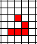
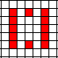
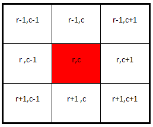

Conway's Game of Life
Conway’s Game of Life is an organism simulation “game” from as far back as the 1970’s that was meant to show how simple rules can cause complex effects when done on a large scale. To start, various locations ( or “cells” ) in an empty grid are “populated”. When the grid is told to Step, each cell either lives or dies according to how many nearby cells are populated.
Watch a video explanation... at home I guess.
| The Rules: Populated Squares (locations that hold a value of true): Each cell with one or no neighbors dies of loneliness. Each cell with four or more neighbors dies of overpopulation Each cell with two or three neighbors survives to see the next step. Unpopulated Squares (locations that hold a value of false): Each cell with three neighbors becomes populated. |
While it is not a normal game, many people look for
patterns that can stay alive for as many generations as possible.
Play an
online version here
make sure to check out the premade shapes, such as :
| The Glider  |
The Exploder  |
Assignment:
Your job is to create an Object that will manage all
of the cells in a 2 dimensional boolean array ( true means populated, false
means unpopulated ).
Create a class named LifeModel which has a 2D boolean array as its instance fields. In order for your class to compile you must implement the following interface
(DO NOT PUT THIS INTO YOUR
PROJECT)
public interface GameOfLife
{
//replaces the instance field with the given array
public void setVals(boolean[][] arr);
//returns the value at the given row and column
public boolean getValAt(int r,int c);
//sets the value at the given row and column
public void setValAt(int r, int c, boolean val);
//toggles the value at the given row and column to its opposite
public void toggle(int r, int c);
//returns the number of rows that the grid has
public int numRows();
//returns the number of columns that the grid has
public int numCols();
//sets all values in the grid to false
public void reset();
//returns the number of neighbors surrounding the given row and column
public int numOfNeighbors(int r, int c);
//The core method. Uses numOfNeighbors to determine which cells live or die
public void step();
}
Extras to add:
1) When you implement an interface, the constructor is up to you. For our purposes, write a default constructor that will set up an array with 40 rows and 50 columns.
2) In order to connect your object to my runner, add the following method to your LifeModel class:
public static void main()
{
LifeModel model = new LifeModel();
GameOfLifeRunner.launchGame(model);
}
The Runner does little more than translate your
instance field into a visual form. The buttons simply call the methods that you’re
writing.
When the Step button is pressed, your
step method is called.
When the Start button is pressed,
your step method is called repeatedly.
When the Reset button is pressed,
your reset method is called.
Tips for programming:
numOfNeighbors:
It is common for people to try and use 8 different if
statements to check each box around r, c. This can get pretty ugly, so instead
use a for loop to loop through all the combinations of rows and columns starting
r-1,c-1 and going to r+1,c+1.

step:
Loop through every location, determing the number of neighbors and use
The Rules to determine if the new value should be true or
false.
· Do not update the array that you’re currently
looping through, this will add neighbors to locations that previously didn’t.
Instead, create an empty temporary array of the same size to put all of your
results into. At the end of the method, put the temporary array into the
instance field.
· The numOfNeighbors method is a helper method. Use it
in your step method to do calculations for you.
· Don’t forget that there are different rules for
occupied vs unoccupied spaces.